✅ Compra confirmada. Ganhaste 20 mapas extra. Vê esta página até ao fim para os resgatares.
O Atlas V9 já é teu. Os 20 mapas de presente ficam no módulo «Presente» do Clube FisioVanta, independentemente da opção que escolhas abaixo.
Os teus 20 mapas de presente
Vê as miniaturas reais dos mapas que vais encontrar no módulo «Presente». São mapas imprimíveis para consultar na tua prática.
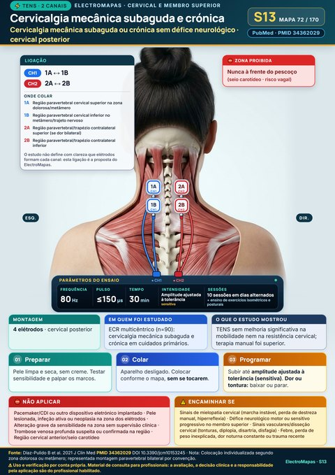
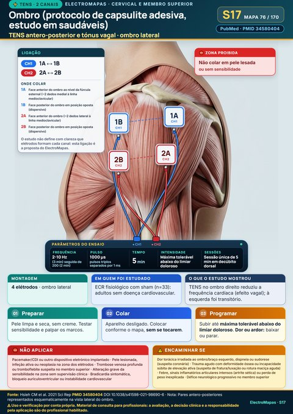
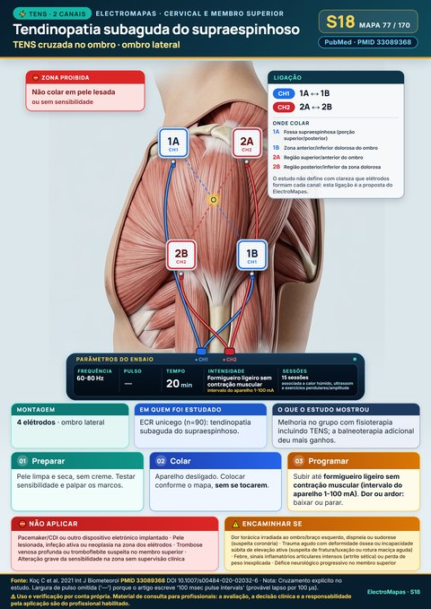
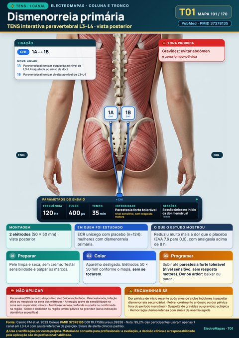
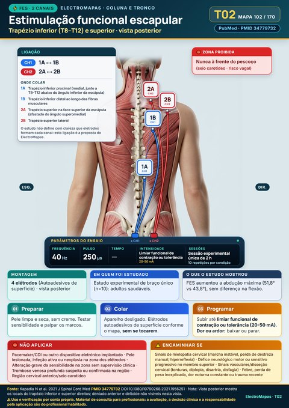
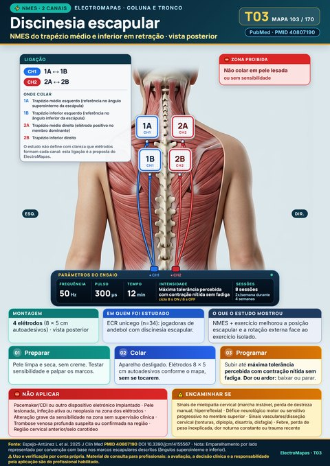
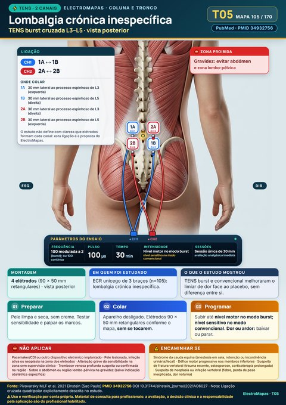
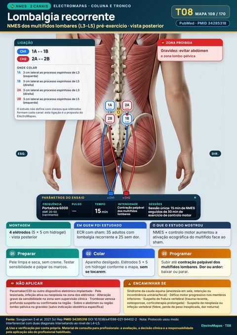
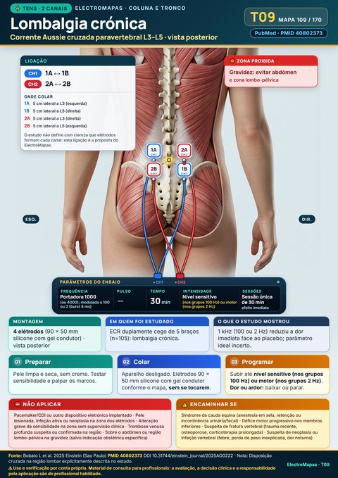
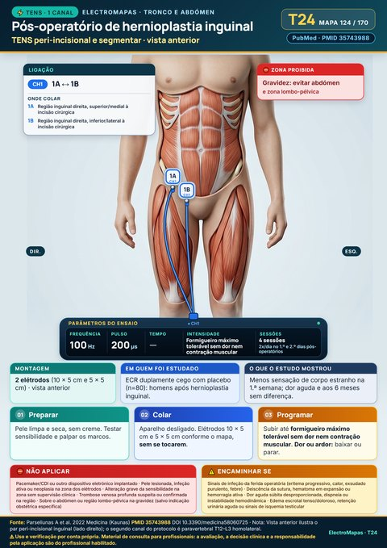
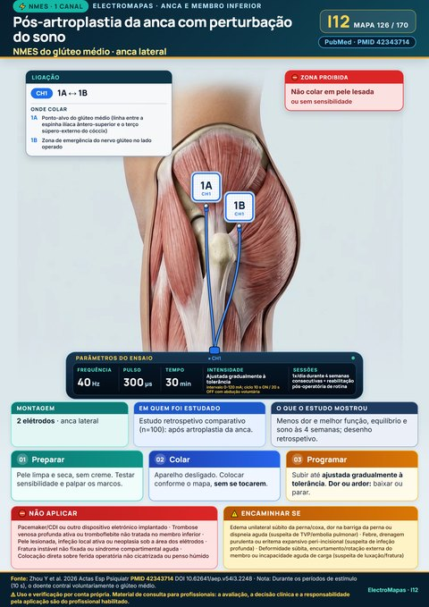
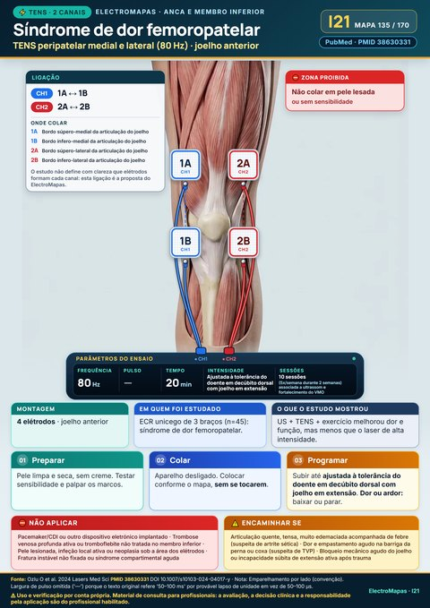
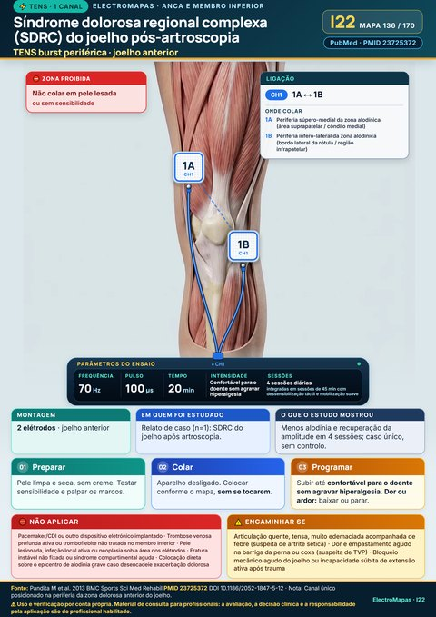
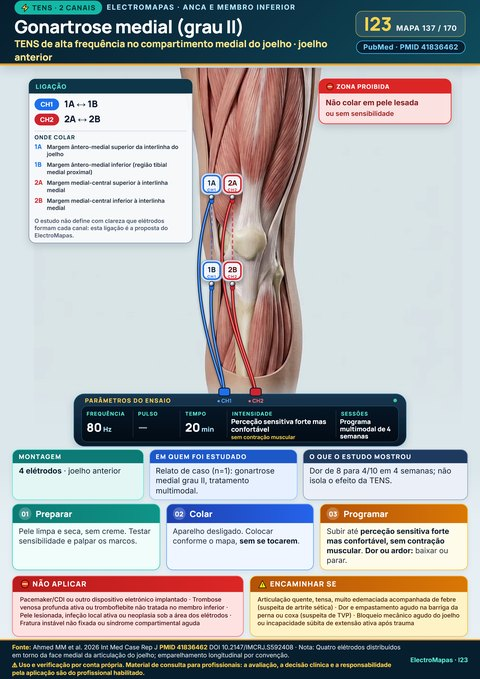
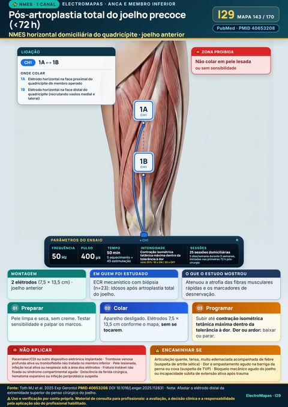
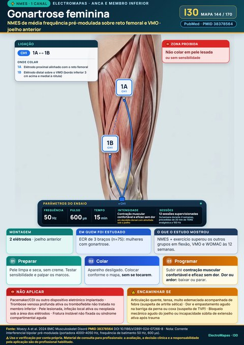
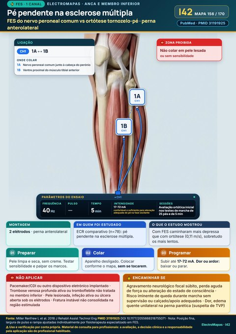
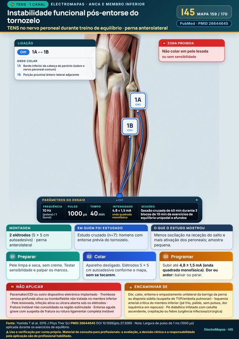
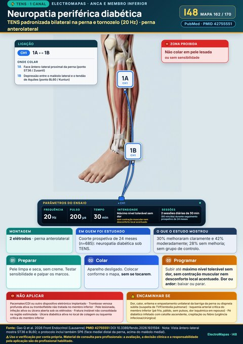
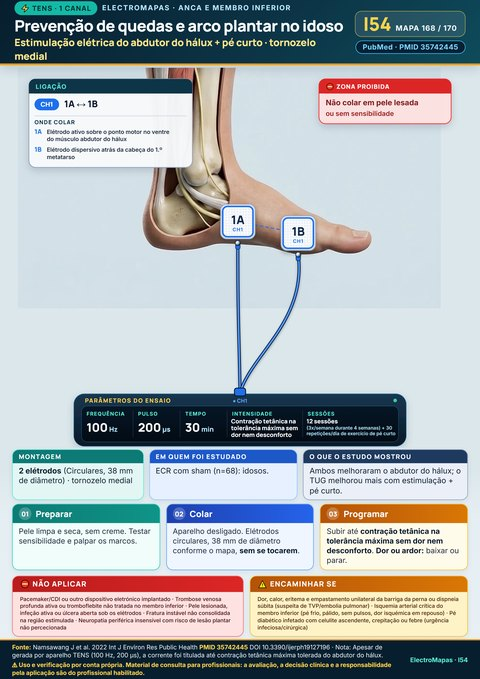
Queres completar a coleção?
A Coleção Completa acrescenta os 70 mapas da expansão e o Atlas completo de 601 páginas, com 170 mapas e 170 fichas. O presente dos 20 mapas continua teu em qualquer caso.


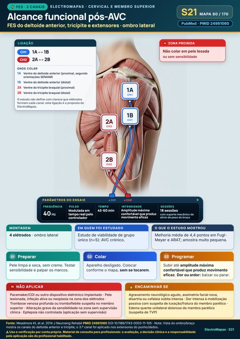
Os 70 da expansão + o Atlas completo
- 170 mapas e 170 fichas no Atlas de 601 páginas.
- Mapas imprimíveis para consulta e organização.
- Os 20 mapas de presente já estão incluídos no teu acesso.
Compra adicional opcional. O acesso ao Atlas V9 que já compraste mantém-se.